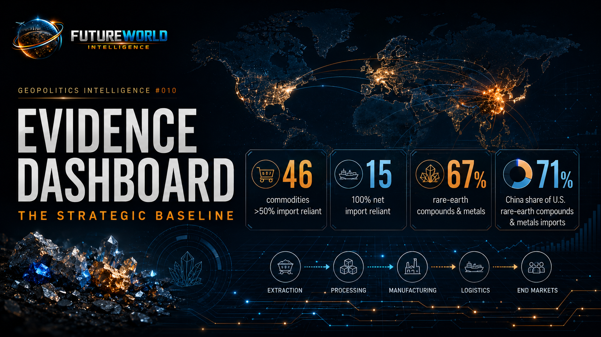
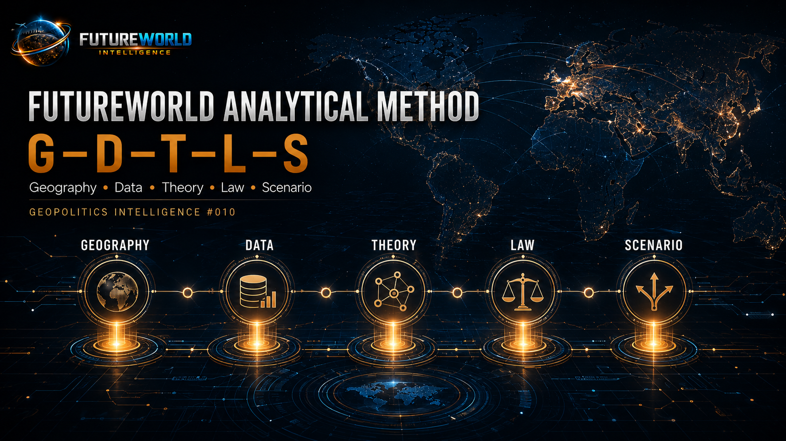
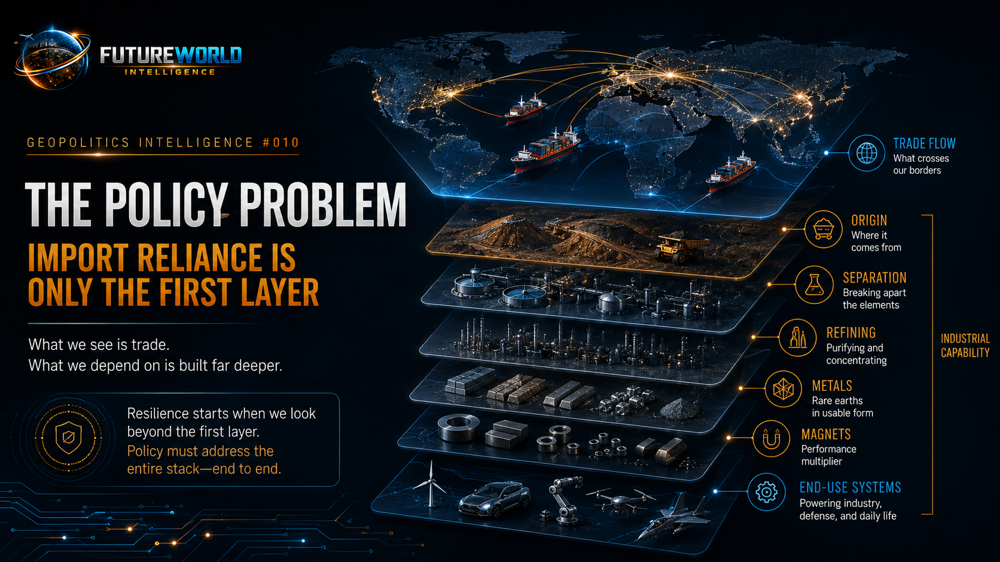
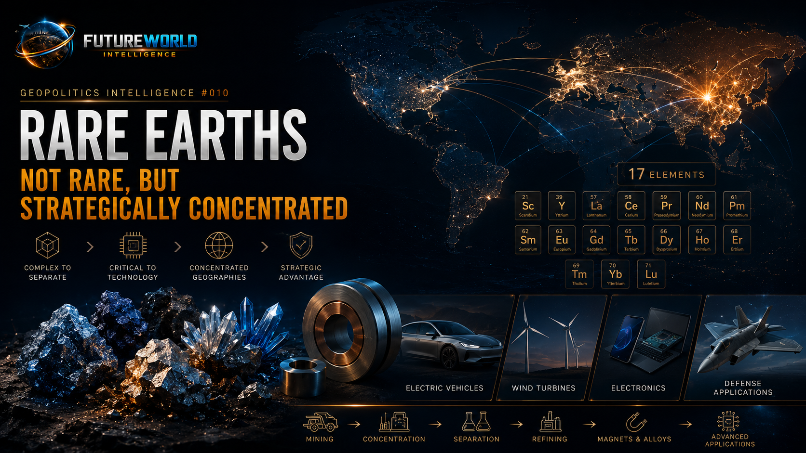
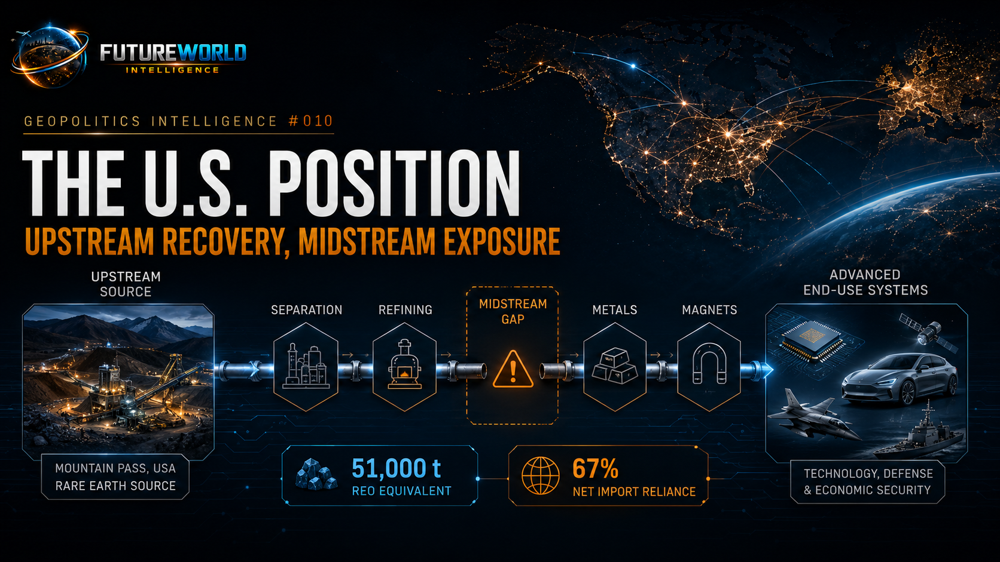
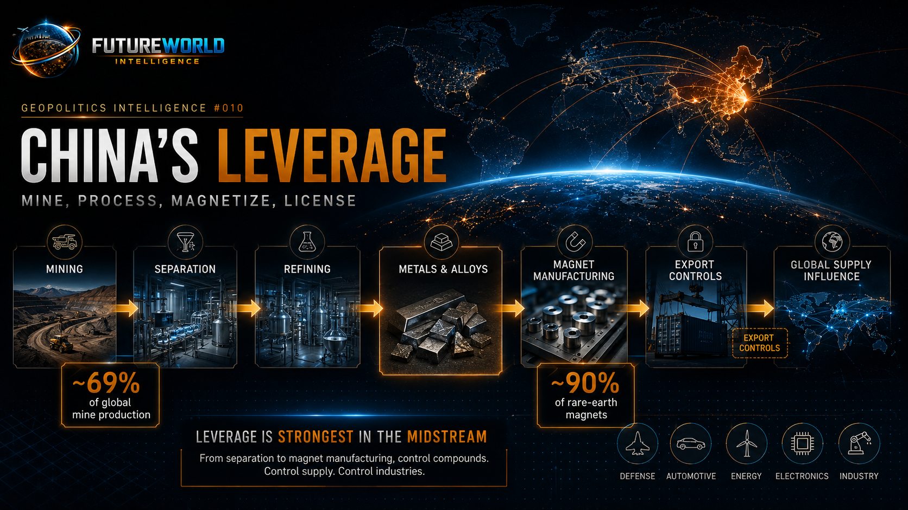
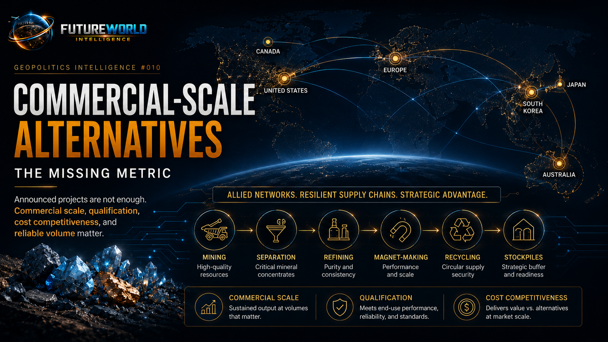
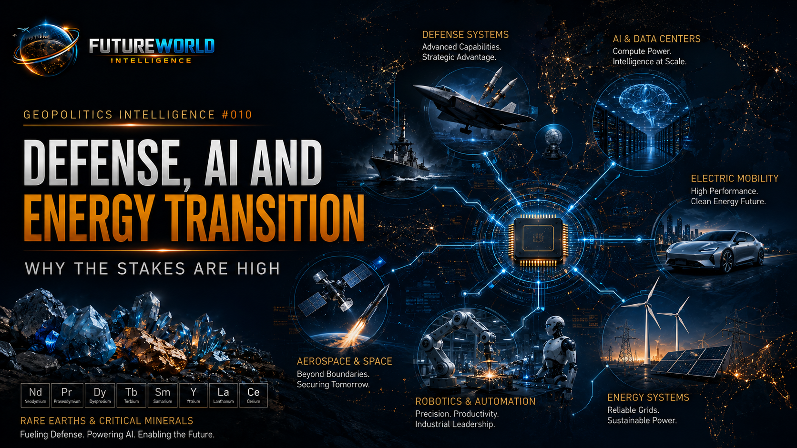
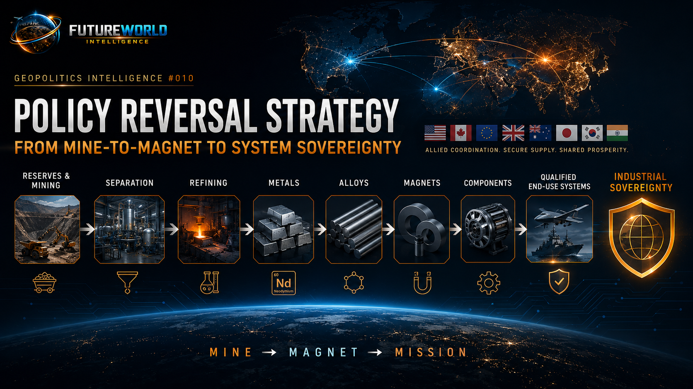

Executive Brief
Critical minerals are no longer a narrow mining issue. They are now a central arena of geoeconomic power, industrial sovereignty and strategic competition. The United States may lead in advanced semiconductors, artificial intelligence, aerospace, cloud computing, financial markets and military technology, but many of the physical inputs beneath those systems remain exposed to foreign supply chains. The central vulnerability is not simply a shortage of rocks. It is the absence, weakness or fragility of the midstream industrial layers that convert minerals into usable strategic inputs.
This report argues that the U.S. critical-minerals problem is best understood as a systems-power problem. Domestic mining capacity exists for some materials, including rare earth mineral concentrates. But mining does not automatically create industrial sovereignty. Sovereignty emerges only when a country or allied network can move from mine to concentrate, separation, refining, metals, alloys, magnets, components and qualified end-use systems at commercial scale.
Rare earths illustrate the problem clearly. The United States produced an estimated 51,000 tons of rare-earth-oxide equivalent in mineral concentrates in 2025. That means the United States should not be described as having no rare-earth production. However, USGS estimated U.S. net import reliance for rare-earth compounds and metals at 67 percent in 2025, and reported that from 2021 to 2024, China supplied 71 percent of U.S. rare-earth compounds and metals imports. USGS also notes that compounds and metals imported from Estonia, Japan and Malaysia were derived from mineral concentrates and chemical intermediates produced in Australia, China and elsewhere. This is the key strategic point: visible import source is not the same as full supply-chain origin.
China’s leverage is strongest in the difficult middle layers: separation, refining, metals, alloys, magnet-making, processing technology and export licensing. Reuters reported in 2025 that China mines about 60 percent of the world’s rare earths and makes about 90 percent of rare-earth magnets. USGS estimated China’s 2025 rare-earth mine production at 270,000 tons out of a global total of 390,000 tons, or roughly 69 percent. China’s role is therefore not just that of a producer. It is a system coordinator.
The policy risk is now active, not theoretical. In April 2025, China tightened export controls on samarium, gadolinium, terbium, dysprosium, lutetium, scandium and yttrium-related materials. These are not ordinary commodities. Several are medium and heavy rare earths used in high-performance magnets, defense systems, electric vehicles, wind turbines, electronics, aerospace and advanced manufacturing. In June 2026, Reuters reported that China added several U.S. rare-earth and defense-linked firms, including MP Materials and USA Rare Earth, to an export-control list. This shows that mineral leverage has entered the same strategic space as semiconductor controls, sanctions and defense-industrial policy.
The critiques around import-reliance dashboards are therefore important. A static map showing import sources is useful, but it can mislead if it fails to distinguish between trade flow, geological origin, processing location and industrial capability. A country listed as an import source may be a processor, re-exporter, trader or intermediate node rather than the original mineral source. Equally, a country may possess reserves and mines but still lack commercial-scale separation, refining and magnet production.
For FutureWorld Intelligence, the doctrine is clear:
Critical-minerals power is not measured only by reserves. It is measured by the ability to convert reserves into qualified industrial systems.
Evidence Dashboard: The Strategic Baseline

| Strategic Question | Evidence Anchor | Policy Meaning |
|---|---|---|
| How dependent is the U.S. on mineral imports? | USGS reported that in 2024 imports made up more than half of U.S. apparent consumption for 46 nonfuel mineral commodities, and the U.S. was 100 percent net import reliant for 15 of them. | U.S. exposure is broad across the mineral base, not limited to rare earths. |
| Is the U.S. fully dependent on foreign rare earths? | No. USGS estimated U.S. rare-earth mineral concentrate production at 51,000 tons REO equivalent in 2025. | The U.S. has upstream rare-earth production; the vulnerability is mainly downstream and midstream. |
| What is U.S. rare-earth compounds/metals dependence? | USGS estimated U.S. net import reliance for rare-earth compounds and metals at 67 percent in 2025. | Domestic mining does not yet equal compounds, metals, alloys and magnet sovereignty. |
| Who supplies U.S. rare-earth compounds/metals? | USGS listed import sources for 2021–2024 as China 71%, Malaysia 13%, Japan 5%, Estonia 5%, other 6%. | China remains the central visible import node, while other sources may still depend on China-linked intermediates. |
| How dominant is China globally? | USGS estimated China’s 2025 rare-earth mine production at 270,000 tons out of 390,000 tons globally. | China controls the largest upstream production base and remains highly dominant in processing and magnets. |
| Why is processing the key chokepoint? | Rare-earth separation is technically difficult, costly and environmentally demanding; China has spent decades mastering these industrial processes. | The strategic gap is not geology alone; it is processing capability, environmental tolerance, scale and know-how. |
| Is China using export controls? | China tightened rare-earth export controls in April 2025 and later targeted U.S. rare-earth and defense-linked firms in June 2026. | Mineral leverage is now an active tool of geoeconomic statecraft. |
| Why do magnets matter? | USGS identifies magnets as the leading global use of rare earths; Reuters reports China makes about 90% of rare-earth magnets. | The decisive layer is often magnets and components, not raw minerals. |
| Are alternatives developing? | Recent U.S., allied and private-sector moves aim to build non-Chinese mine-to-magnet capacity. | Reversal is possible but slow; commercial scale, qualification and cost remain major constraints. |
FutureWorld Analytical Method: G-D-T-L-S

FutureWorld Intelligence applies the G-D-T-L-S formula to critical minerals because the subject is often misunderstood when treated as a simple commodity issue.
G — Geography: Critical minerals are geographically distributed, but strategic power is concentrated where mining, processing, refining, metallurgy, magnet manufacturing and component qualification converge. The map of mines is not the same as the map of power.
D — Data: The critical indicators are net import reliance, mine production, refining concentration, import-source shares, export-control coverage, magnet capacity, stockpile levels, defense qualification timelines and commercial-scale alternatives.
T — Theory: This report uses geoeconomics, systems theory, dependency theory, industrial policy, national capability theory and supply-chain security analysis.
L — Law: The legal layer includes export controls, import tariffs, investment screening, defense procurement rules, environmental permitting, technology-transfer restrictions, sanctions and national-security industrial policy.
S — Scenario: The report evaluates four pathways: managed diversification, controlled dependency, export-control escalation and allied mine-to-magnet renewal.
Through this method, the critical-minerals issue becomes clearer. Geography shows where resources and industrial nodes are located. Data shows exposure and concentration. Theory explains why midstream capability creates leverage. Law shows how governments weaponize or protect supply chains. Scenarios show how the mineral system may reshape global power.
1. The Policy Problem: Import Reliance Is Only the First Layer

Import reliance is a useful warning signal, but it is not the full diagnosis.
A country can import a mineral from a friendly country while the underlying supply chain still depends on a rival’s processing system. A country can produce mineral concentrates domestically while still lacking separation, refining, metals, alloys and magnet production. A country can have reserves but no commercial-scale project. A country can announce a mine but wait years for permits, financing, environmental approval, offtake agreements, skilled labor and customer qualification.
The dashboard image that triggered this analysis is valuable because it visualizes U.S. dependence across many nonfuel mineral commodities. But the critiques are correct: dashboards can mislead if viewers assume that an import-source label equals original mineral origin or industrial control.
The Germany/Yttrium critique is especially useful. USGS 2025 listed yttrium compounds as 100 percent net import reliant, with China and Germany among listed import sources. A critic argued that U.S. trade data did not clearly show such imports from Germany. Whether the dashboard interpretation or the trade-data objection is ultimately correct, the methodological lesson is important: customs flows, trade statistics and mineral-origin data do not always measure the same thing.
USGS itself warns in the rare-earths chapter that compounds and metals imported from Estonia, Japan and Malaysia may be derived from mineral concentrates and chemical intermediates produced in Australia, China and elsewhere. This means the visible import source may be an intermediate node.
For policy analysis, this is decisive. The question is not only “Where did the U.S. import from?” The better question is:
Where was the material mined, separated, refined, alloyed, magnetized, embedded and qualified?
That is the difference between trade statistics and systems intelligence.
2. Rare Earths: Not Rare, but Strategically Concentrated

Rare earths are often misunderstood. They are not always rare in geological abundance. Their strategic value comes from their physical properties, processing complexity and role in high-performance systems.
Rare earths include 17 elements: the 15 lanthanides plus scandium and yttrium. They are used in catalysts, polishing, glass, ceramics, batteries and electronics, but their most strategic use is in permanent magnets. These magnets enable compact, high-performance motors and systems used in electric vehicles, wind turbines, drones, missiles, radar systems, smartphones, robotics, satellites, data centers and advanced industrial equipment.
The critical issue is that rare earths are difficult to separate from one another. The separation process requires chemical expertise, environmental management, capital, permitting, waste handling and industrial learning. China’s advantage did not emerge only because it has minerals. It emerged because it built a full industrial ecosystem around extraction, separation, refining, metallurgy, magnets and downstream manufacturing.
This creates the central policy distinction:
Resources are geological. Supply chains are industrial. Leverage is systemic.
A country with ore is not necessarily powerful. A country with the ability to transform ore into qualified magnets for defense and clean-energy systems is powerful.
3. The U.S. Position: Upstream Recovery, Midstream Exposure

The United States has made progress in rebuilding rare-earth capacity. Mountain Pass in California remains a major rare-earth mining site, and USGS estimated U.S. production of 51,000 tons REO equivalent in mineral concentrates in 2025. Rare-earth compounds were also produced domestically in the Western United States.
This matters because it corrects a common misconception. The United States is not completely absent from rare-earth production. The stronger argument is more precise: the United States has rebuilt part of the upstream base but remains exposed in the midstream and downstream layers.
The 2025 USGS rare-earths data shows the problem. U.S. rare-earth compounds and metals net import reliance was estimated at 67 percent. U.S. imports of rare-earth compounds and metals increased sharply in 2025, while USGS noted that a significant amount of imported rare earths was embedded in finished goods.
This creates two layers of dependency:
- Direct dependency: imported compounds, metals, alloys and magnets.
- Embedded dependency: rare earths imported inside finished goods and components.
Embedded dependency is harder to measure and harder to regulate. A defense system, EV motor, industrial robot or electronics assembly may contain rare-earth magnets or inputs whose origin is not obvious from the final product. This means supply-chain vulnerability can hide inside complex manufacturing networks.
The U.S. policy challenge is therefore not only to mine rare earths. It is to build a traceable, qualified and commercially competitive industrial chain from mine to magnet to system.
4. China’s Leverage: Mine, Process, Magnetize, License

China’s advantage is not one-dimensional. It operates through a sequence of mutually reinforcing layers.
First, China is the largest rare-earth producer. USGS estimated China’s 2025 mine production at 270,000 tons REO equivalent, compared with a world total of 390,000 tons. That gives China roughly 69 percent of global mine production.
Second, China dominates processing. Reuters reported that China mines about 60 percent of the world’s rare earths but makes about 90 percent of rare-earth magnets. It also reports that China has spent decades mastering solvent extraction and that China has banned or restricted technologies related to rare-earth separation and magnet production.
Third, China uses licensing and export controls. In April 2025, China added seven rare-earth categories to export controls: samarium, gadolinium, terbium, dysprosium, lutetium, scandium and yttrium-related items. These materials matter because several are medium and heavy rare earths used in high-performance magnets and advanced systems.
Fourth, China can target firms and countries. In June 2026, Reuters reported that China added U.S. entities including MP Materials and USA Rare Earth to an export-control list. In the same month, Reuters reported that China’s exports to Japan of several rare earths used for powerful magnets remained negligible, extending pressure on Japanese supply chains.
This is export-control statecraft. It uses administrative licensing, customs procedures, dual-use rules and strategic ambiguity to shape global supply behavior. It does not require a full embargo to be effective. Delays, uncertainty and licensing bottlenecks can be enough to disrupt commercial planning.
5. The Data Problem: Why Mineral Dashboards Need Warning Labels
The critiques rightly warn that mineral dashboards can create false confidence if readers do not understand what the data represents.
A chart may show “leading import source.” That may mean the country from which the material was shipped, not necessarily where the ore was mined, where it was chemically separated, where it was refined, or where value was added. A dashboard may list a country such as Germany, Japan, Estonia or Malaysia as a source, but the underlying feedstock or intermediate material may originate elsewhere.
This is not a minor technical problem. It is a strategic problem.
If policymakers misread trade-flow data as supply-chain-control data, they may overestimate diversification. A country may appear to have multiple suppliers while the entire system still depends on a single upstream or midstream node.
For FWI, the regenerated image and final report should include two methodological warnings:
Warning 1: Visible import source is not the same as mineral origin.
Warning 2: Mining capacity is not the same as magnet sovereignty.
These warnings turn a simple dashboard into a policy intelligence tool.
6. Commercial-Scale Alternatives: The Missing Metric

A second critique asks the most important policy question: what is being done to reverse dependence?
This is the correct direction. A static exposure map is incomplete unless paired with a reversal map.
The U.S. and allies are attempting to rebuild non-Chinese capacity through mining, separation, refining, magnet manufacturing, recycling, substitution, stockpiling and defense procurement. Recent private-sector and government-backed moves show that the West understands the vulnerability. Energy Fuels’ planned acquisition of Germany’s VAC magnet group, for example, reflects a broader effort to build non-Chinese magnet capacity. U.S. policy and defense-industrial initiatives are also supporting rare-earth processing and magnet supply chains.
But the difficulty is commercial scale.
An alternative supply chain is not credible merely because a project exists. It becomes credible when it can produce qualified material at reliable volume, competitive cost and acceptable quality, under long-term contracts, with environmental compliance and customer certification.
This is where many projects struggle. Mining can take years. Separation is technically difficult. Magnet manufacturing requires know-how and customer trust. Defense qualification takes time. Substitution may reduce reliance in some applications, but substitutes are often less effective. Recycling is useful but cannot yet provide the full scale required for modern electrification, AI infrastructure and defense systems.
The policy problem is therefore not “Can the U.S. find minerals?” It is:
Can the U.S. and its allies build commercial-scale, qualified, non-Chinese industrial chains fast enough?
7. Defense, AI and Energy Transition: Why the Stakes Are High

Rare earths and other critical minerals are strategic because they enable systems that define future power.
In defense, rare-earth magnets and related materials support precision weapons, guidance systems, aircraft components, naval systems, drones, sensors, radar, sonar and secure communications. A disruption does not necessarily stop all production immediately, but it can create delays, cost increases, qualification problems and inventory stress.
In clean energy, rare earths support wind turbine generators and EV motors. Critical minerals more broadly support batteries, grids, inverters, solar systems, hydrogen technologies and electrified transport.
In AI and digital infrastructure, the link is indirect but real. AI depends on data centers, chips, power systems, cooling, grid equipment, advanced electronics, sensors, robotics and industrial automation. These systems rely on copper, gallium, germanium, rare earths, graphite, nickel, lithium, cobalt and other strategic materials. Critical minerals are therefore part of the physical stack beneath the digital economy.
This connects directly to the FutureWorld Systems Race doctrine:
A country may lead in software but remain exposed if it cannot secure the materials, components and industrial systems beneath the software.
8. Policy Reversal Strategy: From Mine-to-Magnet to System Sovereignty

The U.S. and allied response should be judged through a capability-conversion framework.
1. Domestic Mining
Domestic mining reduces upstream exposure but does not solve the problem alone. Mines must be connected to separation, refining, metallurgy and manufacturing.
2. Allied Processing
Allied processing capacity is essential because no single Western country can quickly rebuild every layer alone. Canada, Australia, Japan, South Korea, the EU, Malaysia and other partners matter, but their supply chains must be traced below the first import source.
3. Metals, Alloys and Magnets
The decisive rare-earth layer is often magnet production. Without metals, alloys and permanent magnets, mineral production remains incomplete.
4. Strategic Stockpiles
Stockpiles can buy time during disruption but cannot replace long-term production. They should be targeted toward materials with high defense criticality and low substitutability.
5. Recycling and Urban Mining
Recycling can reduce dependence, especially for magnets and batteries, but scale, collection systems and economic viability remain constraints.
6. Substitution
Substitution should be pursued where possible, but USGS notes that substitutes are available for many rare-earth applications but generally less effective. This means substitution is a risk-reduction tool, not a universal solution.
7. Qualification and Procurement
Defense and high-technology supply chains require qualification. Governments must support not only production but also customer certification, offtake agreements and demand certainty.
8. Data Traceability
The U.S. and allies need better traceability from mine origin to final component. Without traceability, diversification may be statistical rather than real.
The strategic goal should be system sovereignty, not autarky. The United States does not need to produce everything domestically. But it needs secure, trusted, traceable and scalable access across all essential layers.
9. Global South and Pakistan: Resource Opportunity or Dependency Trap
The critical-minerals race will affect the Global South deeply. Resource-rich countries may gain new bargaining power, but only if they avoid being locked into raw-material export roles.
The historical pattern is familiar: developing countries export ores or concentrates, while advanced economies or industrial powers capture processing, refining, technology, finance and manufacturing margins. Critical minerals could reproduce this pattern unless resource-rich states build domestic capability.
For Pakistan and similar countries, the lesson is important. Mineral potential alone is not enough. A national minerals strategy must connect geology with surveying, governance, environmental safeguards, local communities, processing capacity, infrastructure, energy supply, skills, investment security and export strategy.
Pakistan should not view critical minerals only as a mining opportunity. It should view them as part of industrial policy, climate transition, digital infrastructure, defense supply chains and regional geoeconomics.
The question is not simply: does Pakistan have minerals?
The better question is: can Pakistan convert minerals into national capability?
10. Policy Implications
For the United States
The United States should move from import-reliance awareness to supply-chain conversion. The priority is not only more mining but integrated mine-to-magnet capacity, allied processing, strategic stockpiling, magnet manufacturing, defense qualification and traceability.
For China
China’s mineral leverage is powerful, but it carries reputational and strategic costs. Aggressive export controls accelerate Western diversification, friend-shoring and industrial policy. China can use mineral controls as leverage, but overuse may reduce long-term dependence on Chinese systems.
For U.S. Allies
Allies should coordinate rather than duplicate. Canada, Australia, Japan, South Korea, the EU and others should build complementary roles across mining, separation, refining, magnet manufacturing, recycling and component qualification.
For Industry
Companies should stop treating critical minerals as a low-level procurement issue. They should map tier-two, tier-three and embedded dependencies, test disruption scenarios, secure offtake agreements and invest in traceable supply chains.
For the Global South
Resource-rich developing countries should negotiate for local value addition, environmental safeguards, technology transfer, community benefits and processing capacity. Exporting ore without building capability repeats old dependency patterns.
11. Scenario Pathways
Scenario 1 — Managed Diversification
The United States and allies gradually build non-Chinese capacity across mining, separation, refining and magnets. China remains dominant but loses some leverage. Supply chains become more expensive but more resilient.
Scenario 2 — Controlled Dependency
The U.S. improves upstream production but remains dependent on China-linked midstream and magnet systems. Trade continues under licensing uncertainty. Firms adapt through inventories and selective sourcing, but strategic exposure remains.
Scenario 3 — Export-Control Escalation
China expands export controls to more rare earths, magnets, processing technologies or dual-use components. Defense, EV, robotics, aerospace and electronics manufacturers face delays, higher costs and qualification bottlenecks.
Scenario 4 — Allied Mine-to-Magnet Renewal
The U.S., EU, Japan, Canada, Australia and other partners build a coordinated rare-earth and critical-minerals ecosystem. The West does not become fully self-sufficient, but it reduces coercive exposure and rebuilds industrial sovereignty.
12. Early-Warning Indicators
FutureWorld should monitor:
- China’s export-control lists and licensing delays.
- Rare-earth magnet export volumes from China.
- U.S. rare-earth compounds/metals import reliance.
- Heavy rare-earth availability, especially dysprosium, terbium, samarium and yttrium.
- U.S. and allied magnet manufacturing capacity.
- Defense stockpile acquisitions and gaps.
- New separation and refining facilities outside China.
- Customer qualification timelines for non-Chinese suppliers.
- Price spikes in NdPr oxide, dysprosium oxide, terbium oxide, gallium, germanium and antimony.
- Export restrictions on processing technology.
- Trade-data discrepancies between import sources and mineral origin.
- China’s controls targeting specific firms or countries.
- Global South mineral-processing investment and local value-addition policies.
Conclusion
The U.S. critical-minerals challenge is not simply import dependence. It is systems dependence.
The United States has rare-earth mineral production. It has allies with resources, capital and technology. It has powerful industrial demand from defense, clean energy, AI, aerospace and advanced manufacturing. But it still faces strategic exposure where processing, refining, metals, alloys, magnets and embedded components remain concentrated in China-centered supply chains.
China’s leverage is not based only on mines. It is based on the integration of mines, separation, refining, technology, magnets, export licensing and downstream manufacturing. That is systems power.
The critiques of import-reliance dashboards are therefore valuable. They remind us that visible trade flows can hide deeper dependencies. They also show that the policy question is not only how dependent the U.S. is today, but how quickly it can reverse dependence in the layers that matter.
For FutureWorld Intelligence, the central doctrine is clear:
Minerals become power only when they are converted into industrial systems.
Reserves matter. Mines matter. But processing, magnets, qualification, traceability and commercial scale decide strategic autonomy.
The future minerals race will not be won by the country that merely owns the rocks.
It will be won by the country, coalition or industrial network that turns those rocks into the hidden infrastructure of power.
Source Key
S1 — U.S. Geological Survey, Mineral Commodity Summaries 2025. Use for broad U.S. nonfuel mineral import reliance, critical minerals reliance, U.S. mineral economy scale, and the 2024 baseline.
S2 — U.S. Geological Survey, Mineral Commodity Summaries 2026: Rare Earths. Use for 2025 rare-earth production, rare-earth compounds/metals import reliance, import-source shares, China’s world production, embedded imports, stockpile notes and China export-control events.
S3 — Reuters, China rare-earth export controls, April 2025. Use for China’s April 2025 export controls, China’s dominance in rare-earth production and refining, and the impact on defense, EV, electronics and Western supply chains.
S4 — Reuters, China targets U.S. rare-earth and defense-linked firms, June 2026. Use for the escalation of export-control statecraft against firms including MP Materials and USA Rare Earth.
S5 — Reuters, China rare-earth controls and Japan supply pressure, June 2026. Use for evidence that export controls can affect allies and non-U.S. supply chains, especially magnet-related heavy rare earths.
S6 — Reuters, What to know about China’s rare-earth export controls, June 2025. Use for rare-earth basics, magnet importance, China’s magnet dominance, processing difficulty and licensing-delay risks.
S7 — International Energy Agency, Global Critical Minerals Outlook 2025. Use for critical-minerals market concentration, supply-chain monitoring, diversification, recycling, refining and policy mechanisms.
S8 — NIST / CHIPS for America. Use for the strategic connection between semiconductors, national security, AI, clean energy and industrial policy.
S9 — Reuters, Energy Fuels–VAC acquisition, June 2026. Use for private-sector movement toward non-Chinese magnet capacity and allied mine-to-magnet renewal.